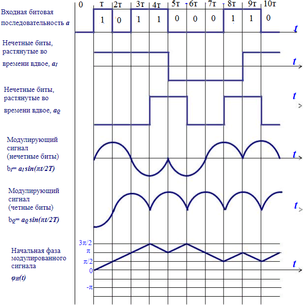
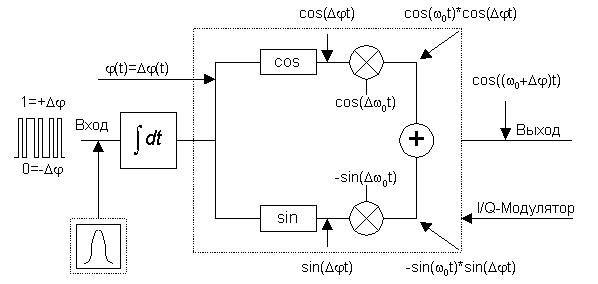

В стандарте GSM выбрана гауссовская частотная манипуляция с минимальным частотным сдвигом – GMSK и с индексом модуляции 0,3. Метод представляет собой частотную манипуляцию, при которой несущая частота принимает дискретные значения через интервалы времени, кратные периоду Т битовой модулирующей последовательности. Используются две дискретные частоты несущей f0:
fн = f0 - F/4 и fв = f0 + F/4,
где F = 1/Т - частота входной битовой последовательности.
Получаемый разнос частот Df=fв – fн = F/2 - это минимально возможный разнос, при котором обеспечивается ортогональность колебаний частот fв и fн на интервале Т длительности одного бита. При этом за интервал Т между колебаниями частот fв и fн набегает разность фаз, равнаяp. Таким образом, термин «минимальный сдвиг» в названии метода модуляции относится к минимально возможному сдвигу частоты несущей.
Модуляция несущей непосредственно прямоугольными импульсами битовой последовательности приводит к довольно широкому спектру частот, занимаемому в эфире радиосигналом. Более узкий спектр получается при модуляции «сглаженными» импульсами. Потому модулирующую битовую последовательность вначале пропускают через сглаживающий узкополосный гауссовский фильтр, чему и соответствует термин «гауссовская» в названии метода модуляции. Именно эта дополнительная фильтрация отличает метод GMSK от метода MSK (Minimum Shift Keying - манипуляция с минимальным сдвигом).
Метод MSK иногда рассматривают как метод квадратурной фазовой манипуляции со смещением (OQPSK), но с заменой прямоугольных модулирующих импульсов длительности 2Т полуволновыми отрезками синусоид или косинусоид. Рассмотрим сначала метод MSK, а затем отметим отличия, возникающие за счет дополнительной гауссовской фильтрации.
В методе MSK входная битовая последовательность разбивается на две последовательности, состоящие соответственно четным и нечетным импульсам. Модулированный выходной сигнал модулятора на протяжении очередного n-го бита определяется выражением, зависящим от состояния текущего n-го и предшествующего (n-1)- го бита:
u(t) = ±Cos(pt/2T)Cos w0t ± Sin(pt/2T)Sin w0t = ±Cos(w0t ± pt/2T),
(n-1) T £ t £ nT
Отсюда следует, что текущая фаза модулированного сигнала:
j(t) = w0t ± pt / 2T
За период следования входных битов Т набег фазы составит:
Dj = ± p/2,
а мгновенная частота, как производная от фазы
w(t) = d[j(t)]/dt = w0 ± p/2T = 2p (f0 ± F/4),
т.е. мгновенная частота принимает одно из двух значений fв или fн. Эта частота постоянна на протяжении бита. Изменение знака перед синусами в выражении для модулированного сигнала означает переход с одной частоты на другую. Изменение общего знака перед выражением модулирующего сигнала, эквивалентное изменению начальной фазы несущей на p, позволяет сохранить непрерывность фазы колебаний при изменении частоты.
Для наглядного пояснения метода MSK обратимся к рис.4.10.

Рис.4.10. Временные диаграммы сигналов GMSK
На первом графике представлен пример входной битовой (модулирующей) последовательности а. Второй и третий графики дают соответственно последовательности нечетных ai и четных aq бит входной последовательности, причем длительность каждого бита увеличена вдвое в сторону запаздывания, т.е. каждый бит «растянут» во времени до 2-х битового символа, и для удобства последующих рассуждений принято, что последовательности aiи aqпринимают значения + 1 и - 1 (значения - 1 соответствуют значению 0 исходной последовательности а). В результате для каждого битового интервала Т расположенные одно над другим значения ai и aqдают как раз ту пару четного и нечетного бит, которые являются аргументом закона модуляции.
Четвертый и пятый графики показывают форму модулирующих сигналов двух квадратурных каналов bi и bq, получаемых как произведение функций ai и aqсоответственно на квадратурные низкочастотные сигналы Sin (pt/2T) и Cos (pt/2T). Обратите внимание на скачкообразные изменения фазы этих сигналов на p в моменты изменения знаков ai и aq.
Окончательный модулированный сигнал, получается как результат перемножения модулирующих сигналов квадратурных каналов с соответствующими несущими Sin(w0t) и Cos(w0t) и последующим суммированием полученных произведений. Принцип формированияGMSK-сигнала приведен на рис.4.11.

Рис.4.11. Принцип формирования GMSK-сигнала
Модуляцию GMSK характеризуют следующие свойства:
постоянная по уровню огибающая, позволяющая использовать передающие устройства с усилителями мощность класса С;
узкий спектр на выходе усилителя мощности передающего устройства обеспечивающий низкий уровень внеполосного излучения;
хорошая помехоустойчивость канала связи.